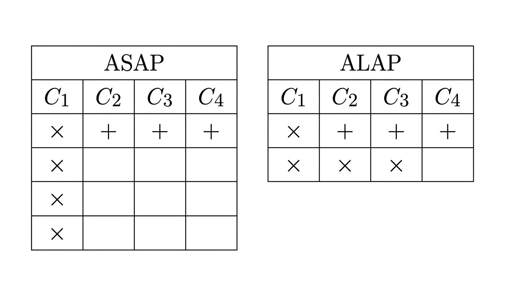

0005 · Ejercicio 2: ASAP, ALAP y movilidad, ciclo por ciclo
Win: recorrer el grafo hacia adelante y hacia atrás en pizarra, calcular la movilidad de los 7 nodos y señalar el camino crítico. Base: tu README Ej. 2. ⏱ ~15–20 min.
1 · Condiciones del ejercicio (decirlas primero)
Dos hipótesis que simplifican todo:
latencia unitaria —cada × y cada + tarda exactamente 1 ciclo—;
recursos ilimitados —si K operaciones están listas en el mismo ciclo, van las K en paralelo—.
Sin la hipótesis 2, el scheduling dependería del hardware disponible; con ella, el resultado mide solo las dependencias del algoritmo. El puente al Ej. 3 es justamente levantar la hipótesis 2 (pasar a 1× y 1+) y ver cuánto cuesta.
2 · ASAP hacia adelante (lo más temprano posible)
Regla: recorro el DFG desde las entradas y disparo cada nodo apenas todas sus entradas están listas. Con las muestras x[n−k] disponibles al inicio:
Ciclo 1: M₀, M₁, M₂, M₃ en paralelo (sus entradas —tap y coeficiente— ya están). Ciclo 2: A₁ = M₀+M₁ (sus dos entradas acaban de llegar). Ciclo 3: A₂ = A₁+M₂ (A₁ del ciclo 2, M₂ esperando desde el 1). Ciclo 4: A₃ = A₂+M₃ = y[n]. Latencia mínima: 4 ciclos. El pico de recursos es 4 multiplicadores simultáneos —la "firma" de ASAP: máxima velocidad, máximo paralelismo inicial.
3 · ALAP hacia atrás (lo más tarde posible)
Pensalo como un estudiante vago pero responsable: el trabajo debe entregarse en la fecha L (la salida no se puede demorar), así que cada tarea se empieza en el último momento que todavía permite llegar a tiempo. ASAP era el ansioso que hace todo ya; ALAP es el que pregunta "¿hasta cuándo lo puedo postergar sin que se caiga nada?".
La regla, dicha sin vueltas: un nodo va en el ciclo anterior al más temprano de sus sucesores. Si tu resultado lo necesita alguien en el ciclo S, vos tenés que estar listo en el ciclo S−1 (cada operador tarda 1 ciclo). Y el punto de partida: L = 4, la latencia mínima que ya calculó ASAP —ALAP nunca inventa ese número, lo hereda.
Apliquemos la regla nodo por nodo, desde la salida hacia atrás. En cada paso preguntamos "¿quién necesita este resultado, y en qué ciclo?":
A₃ → ciclo 4. No tiene sucesores: su "fecha de entrega" es L = 4. La salida debe estar lista acá, sin discusión.
¿Quién necesita a A₃? Nadie (es la salida). ¿Y quiénes alimentan a A₃? A₂ y M₃. A₃ está en el 4, así que sus entradas tienen que estar listas en el 3. Entonces A₂ → ciclo 3 y M₃ → ciclo 3. Fijate en M₃: en ASAP iba en el 1 porque podía; acá va en el 3 porque le alcanza —su único sucesor (A₃) recién lo necesita en el 4. Esa diferencia (1 vs 3) es exactamente su holgura.
¿Quiénes alimentan a A₂? A₁ y M₂. A₂ está en el 3, así que sus entradas van en el 2: A₁ → ciclo 2, M₂ → ciclo 2. M₂ también podía ir en el 1, pero su sucesor (A₂) recién lo necesita en el 3, así que con el 2 le sobra.
¿Quiénes alimentan a A₁? M₀ y M₁. A₁ está en el 2, así que van en el 1: M₀, M₁ → ciclo 1. Estos dos no se pudieron mover: A₁ los necesita sí o sí en el 2 (A₁ a su vez es necesitada en el 3 por A₂, necesitada en el 4 por A₃). Sin margen en ningún eslabón ⇒ movilidad cero.
Resultado: los multiplicadores quedan escalonados 1, 1, 2, 3 en vez de todos en 1. Leelo así: M₀ y M₁ están clavados en el 1 (si se corren, todo se atrasa); M₂ puede "flotar" entre el 1 y el 2; M₃ puede flotar entre el 1 y el 3. Ese escalonado es la holgura hecha visible: cada nodo quedó pegado a su fecha límite en vez de amontonado al inicio.

Tus tablas: ASAP (izq., trabajo concentrado al inicio) vs ALAP (der., trabajo estirado). Leelas fila por fila al exponer.
4 · Tabla de movilidad (el entregable que hay que memorizar)
Op
Tipo
ASAP
ALAP
Movilidad
Lectura
M₀, M₁
×
1
1
0
Críticos
M₂
×
1
2
1
Puede esperar 1 ciclo
M₃
×
1
3
2
Puede esperar 2 ciclos
A₁
+
2
2
0
Crítica
A₂
+
3
3
0
Crítica
A₃
+
4
4
0
Crítica
Camino crítico: M₀ (o M₁) → A₁ → A₂ → A₃, todos movilidad 0. Cualquier demora de un ciclo en cualquiera de ellos retrasa y[n] un ciclo completo. Utilidad: M₂ y M₃, con holgura 1 y 2, pueden postergarse o escalonarse sin tocar la latencia —y dos operaciones cuyas ventanas no se solapan pueden compartir el mismo operador físico. Esa última frase es el teorema informal que justifica el Ej. 3.
5 · Guion para exponer (90 segundos)
"Con recursos ilimitados y un ciclo por operador, ASAP dispara todo lo listo: los 4 productos en el ciclo 1 y las 3 sumas encadenadas —latencia mínima 4. ALAP fija ese 4 y va hacia atrás, retrasando todo lo posible: los productos quedan escalonados 1,1,2,3. La diferencia es la movilidad: M₂ puede esperar 1, M₃ puede esperar 2, el resto nada —ese es mi camino crítico M₀→A₁→A₂→A₃. Y esa holgura de M₂ y M₃ es la que voy a explotar en el Ejercicio 3 para usar un solo multiplicador."
6 · Errores típicos
Inventar L en ALAP → L siempre viene de ASAP.
Poner M₃ en ciclo 1 en ALAP "porque está listo" → ALAP pregunta lo más tarde, no lo más temprano.
Decir que la movilidad cambia la latencia → mover un nodo dentro de su ventana NO cambia la latencia; sacarlo de la ventana sí.
Confundir pico de recursos con camino crítico → el pico (4× en ciclo 1) habla de área; el camino crítico habla de tiempo.